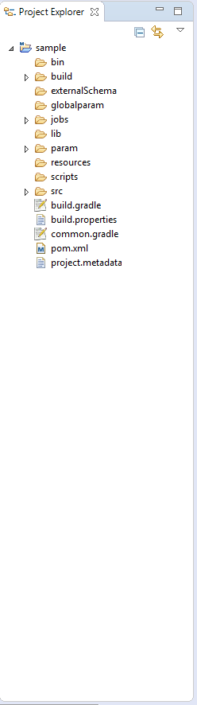

Project Explorer
Project Explorer displays a defined folder structure that manages addition and deletion of new ELT jobs, java classes, parameter files, XML files, build files, scripts and the Hydrograph jar file.
